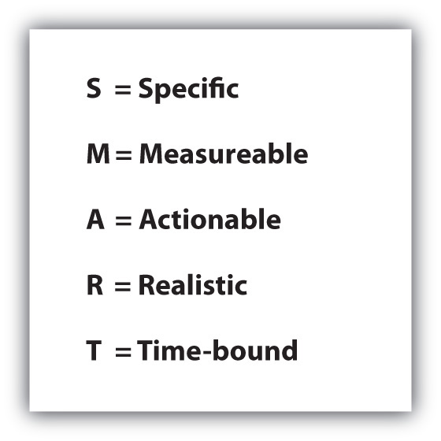
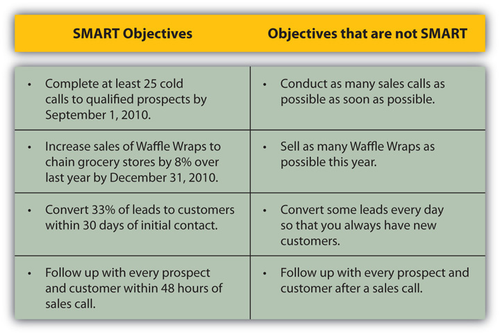

Identifying your prospect’s need is only part of your preapproach research. There’s still more research and planning for you to do before you meet with or speak to the customer.
If you haven’t determined what you hope to achieve before going into your sales call, it will be difficult to figure out what to say once you arrive or once you have your prospect on the phone. Setting precall objectivesGoals that are determined for the sales call before the call is made. is a strategically important step. If you have clear goals, you will be more confident and appear more organized, and it’s more likely that you will see results. Your customers are busy people, and you don’t want to waste their time. They will appreciate your organization and will be more likely to trust your judgment if you come prepared. You also don’t want to waste your time or your company’s time. According to Hoovers, the average sales call costs a company nearly $400!Gary Duncan, “Every Sales Call Requires an Objective and Decision,” Denver Business Journal, October 13, 2006, http://denver.bizjournals.com/denver/stories/2006/10/16/smallb8.html (accessed July 15, 2009).
As you plan your meeting, ask yourself this question: “What will success look like for this call?”American Institute of Public Certified Accountants, “Successful Selling Tips: The Sales Objective,” http://www.aicpa.org/Professional+Resources/CPA+Marketing+Toolkit/SellingTips6.htm (accessed July 15, 2009). That may seem like a question with a straightforward answer, but success doesn’t always mean closing the sale. In some situations, you’ll experience a one-call closeA sales call that results in a sale after one call., but with larger sales, particularly in B2B sales, the sales cycleThe length of time it takes to go from the first contact with the customer to closing the sale., or the length of time it takes to go from the first contact with the customer to closing the sale, is generally longer—sometimes even taking up to a year or longer. Consider Telegraph Hill Robes, a San Francisco-based company that sells bathrobes to upscale hotels with spas. Buying enough bathrobes to stock a hotel spa is a large investment, one that most customers have to carefully consider. The sale has to clear with two contacts at every company: the general manager and the head of housekeeping. As a result, when Telegraph Hill first started selling its product in 1996, its average sales cycle was two years!Susan Greco, “The Need for Speed,” Inc., April 2007, http://www.inc.com/magazine/20070401/salesmarketing-smart-selling.html (accessed July 15, 2009).
If you know that you are facing a longer sales cycle, the goal of your initial call might be gathering and conveying specific information to move forward in the sales process or further qualify your prospect. According to Gary Duncan, principal of the sales training organization Leadership Connections, “In more complex sales it’s realistic to set a precall objective of establishing rapport and trust, making new contacts in the organization, qualifying your prospect’s budget, or discovering what your prospect’s decision-making process is. For instance, you might decide you want to find out who your prospect’s current vendors are, any issues your prospect has with the services she is receiving, and what her goals are for future purchases.”Gary Duncan, “Every Sales Call Requires an Objective and Decision,” Denver Business Journal, October 13, 2006, http://denver.bizjournals.com/denver/stories/2006/10/16/smallb8.html (accessed July 15, 2009). You should also consider your prospect’s objectives: what outcome is she hoping for from this call?
Sometimes, setting strategic, information-gathering objectives may actually help you shorten your overall sales cycle. Take Acumen, a company that sells high-capability accounting software to corporations. Originally, the company’s sales cycle lasted around nine months. However, once the company became more strategic in its precall planning, designing a system of rigorous qualifying questions that its salespeople had to resolve before making a sales pitch, Acumen actually decreased its average sales cycle to somewhere between three and six months. Asking detailed questions during early sales calls allowed the company to cut back on the time it wasted brainstorming solutions and making sales pitches for underqualified leads.Susan Greco, “The Need for Speed,” Inc., April 2007, http://www.inc.com/magazine/20070401/salesmarketing-smart-selling.html (accessed July 15, 2009).
So it’s early in the process of a complex sale, and you are setting your goals for your next meeting with your customer. You know it will primarily be an information-gathering session because you need to know more before you can propose a workable, specific solution. However, if you go into the meeting with a vague plan like “I want to find out more about my prospect’s business,” you won’t accomplish much.Skills Connection, “How to Get Better Results from your Sales Meetings,” video, March 3, 2008, http://www.youtube.com/watch?v=1P6bU1efZbI (accessed July 15, 2009). Instead, you might come up with a goal similar to the one mentioned earlier: “By the end of this meeting, I want to know who my prospect’s current vendors are, what issues or challenges he faces with this vendor’s services, and what three priorities he has for future purchases.” This objective, like all effective precall objectives, is SMARTAn acronym to identify the elements of a successful sales goal: Specific, Measurable, Actionable, Realistic, and Time-bound.. That is, the goal is Specific, Measurable, Actionable, Realistic, and Time-bound.Virtual Strategist, “How to Set SMART Goals,” video, M3 Planning, October 17, 2008, http://www.youtube.com/watch?v=uThBb3kGf4k (accessed July 15, 2009).
Figure 8.5 SMART Objectives
SMART objectives give you the power to sell strategically by setting goals you can achieve. Another powerful tool is the simple act of putting your goals down in writing. Not only are you likely to make a stronger commitment to your goals when you have them on paper, but you will also be able to use your written goals for reference later on—even during the sales call if you need to.Roy Chitwood, “Every Sales Call Must Have a Clear Objective,” Puget Sound Business Journal, September 26, 1997, http://www.bizjournals.com/seattle/stories/1997/09/29/smallb3.html?page=2 (accessed July 15, 2009).
Setting SMART Objectives
(click to see video)Watch this short video about setting SMART objectives for your sales calls.
Source: Skills Connection
Figure 8.6 Examples of SMART Objectives
Which of the following is a SMART goal for your first sales call on a prospect to sell car insurance? Rewrite each of the other goals to be SMART.